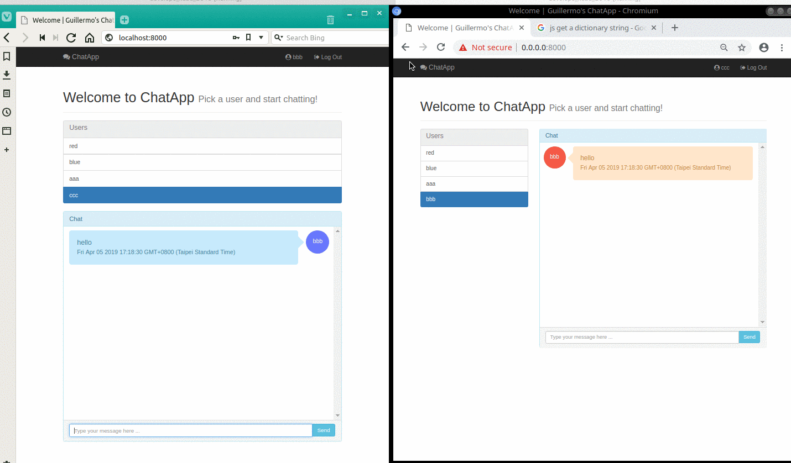

Chat Application
This was a project I started back in november 2021. I was the sole creator/developer for this project before I was able to hire help.
A small functional person-to-person message center application built using Django. It has a REST API and uses WebSockets to notify clients of new messages and avoid polling.
Architecture
- - When a user logs in, the frontend downloads the user list and opens a Websocket connection to the server (notifications channel).
- - When a user selects another user to chat, the frontend downloads the latest 15 messages (see settings) they've exchanged.
- - When a user sends a message, the frontend sends a POST to the REST API, then Django saves the message and notifies the users involved using the Websocket connection (sends the new message ID).
- - When the frontend receives a new message notification (with the message ID), it performs a GET query to the API to download the received message.
Technologies:
- - Python
- - Django + Django REST Framework
- - JavaScript
- - HTML/CSS